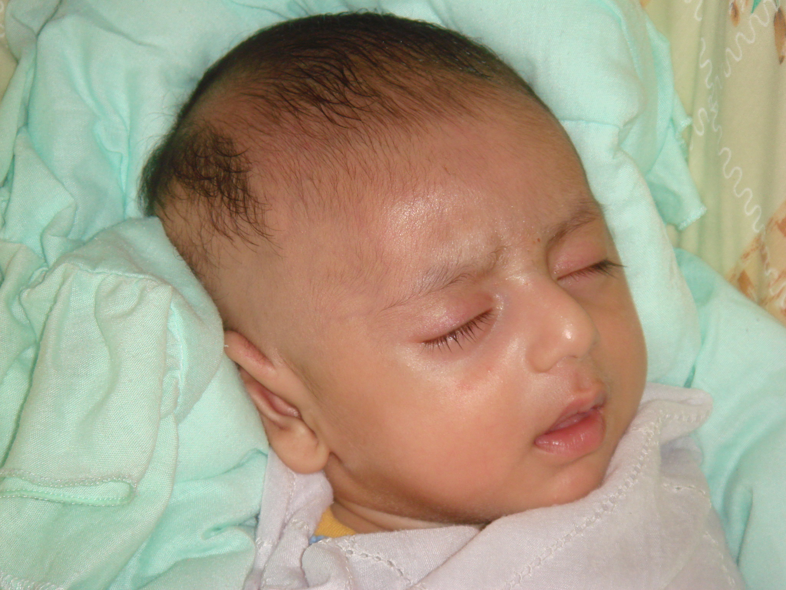

Yasir!
June 19, 2006

Assalaam 'Alaikum!
Here is a more recent pic of Yasir…
Yasir Yusuf
June 2, 2006
Welcome, Yasir!
May 29, 2006
Yasir bin Yusuf Kapadia joined the world on April 07, 2006. Alhamdulillah for this great blessing. He was born by a C-Section, weighing 3.150 kgs.
May ALLAH make him a true and sincere Muslim who contributes to the betterment of this Ummah, insha ALLAH. May he be a source of happiness and Sadaqah Jariyah for his parents.
Ameen.
Feeding Ilyaas
March 11, 2006
Assalaam ‘Alaikum
I tried my hand at cleaning shrimps today for the first time…and ew…I was totally grossed out…I dunno how my mom does it…but after trying several, I did get the hang of it, but it still felt yucky…
Ilyaas is taking his first steps..alhamdulillah… He walks for a bit ..like 2-3 independent steps and stumbles…Subhanallah…my heart bursts with joy when I see him …and we walk with such ease , completely underestimating Allah’s bounties…
Anyways…feeding Ilyaas is such a huge challenge…Meal times are my most dreadful moments…I mean how does one feed a baby who is not ready to sit in one place…turns his mouth away when the spoon approaches him, tries to escape from his chair…It takes two to feed him, one hold his mouth and feeds him and the the other distracts him with toys … How do you guys manage? Any tips welcome… and oh…what is a year old to be fed exactly? I usually give him ground rice/potatoes/lentils/oatmeal etc…What do other mommas feed their babies? Any new ideas most welcome…
I’m around…
March 8, 2006
Assalaam ‘Alaikum!
I know I’ve been away for a long time but it isn’t easy being pregnant and taking care of a 1 yr old at the same time…yes Ilyaas turned a year old on Feb 12…sometimes, its hard to believe, it has been a year since those deadly hospital visits, the operation room, and all those horrible memories…but Ilyaas is also a part of those memories and reminding myself that I had him thru those hard times makes it all bearable…This time, there haven’t been any major complications, alhamdulillah the fetal presentation isn’t breech either…that’s a relief…it’s cephalic…
A slight complication is that the ultrasound shows my due date to be 12March whereas my due date as per calculation is march 30…this is all too confusing, and I hope everything turns out to be fine, insha ALLAH…I hope its not another C- Section…
Amidst all this, we’re moving !!!
Currently, we reside in a 3 br apartment in the heart of the city…we’re moving to a little villa in another peaceful place…mostly due to lack of enough space…the rooms in our present home aren’t spacious and the kitchen is too small…Our new home has 2 bedrooms comparatively larger, a large hall, dining, a garage for 2 cars…and a little front yard…with trees lined at the edges…sorry I’m not that good at describing..we’ll be having a mago tree, and some others as well…insha ALLAH…good for the kids to play around…it’s fully furnished…the fridge is even stocked up with eatables!!!and I love my bathroom…(lol)…I ‘ll post pix soon…both old and new homes…We’re officially moving there by the first of April..that’s around my Due date…I just hope we can manage it all…
We’re both looking forward to moving to our new home and a bit sad about leaving the home we’ve been living in for about 10 years…it seems like only yesterday..reminds me how when we leave this world, it’ll be as if we lived here for not more than a day or two..
These days, it’s the Grand Prix season around Bahrain…I’m not into it, I haven’t been to the Bahrain International Circuit and I don’t even know the names of the teams…basically, its just not my thing…
That’s all for now…More later…Please remember me in your Dua’s…That’s an earnest request…Fi Amaan ALLAH.
Henna Gallery
January 17, 2006
Assalaam ‘Alaikum!
Check out this really nice Henna gallery by indu_zari here:
http://community.webshots.com/user/indu_zari_henna
And these cool Henna blogs:
www.hennafairy.com
www.jewelmuse.blogspot.com
If you have any cool Henna links, pls do share!!!
There is this henna salon in Bahrain called Rachna Henna Salon that does awesome Henna designs, I did a net search for it, but didnt come up with any results… I wonder where their designs come from…
Waiting for the Henna Links!
Eid Mubarak!
January 17, 2006
Assalaam ‘Alaikum!
A belated Eid Mubarak to all!
Taqabballahu Minna wa Minkum!
May our next Eid be as a Hajji, insha ALLAH!
New Year Links
January 5, 2006
Assalaam ‘Alaikum!
A beautiful, thought provoking poem on the New Year by Maliha.
http://maliha.blogspot.com/2005_12_25_maliha_archive.html
An inspiring article,
5 things You Can Do For Yourself in 2006
Any ways, its not our new year ..our new year begins in Muharram, the first Islamic Month.